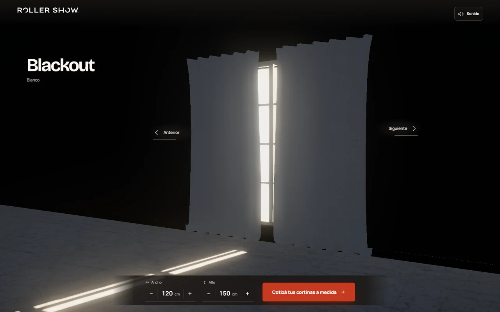
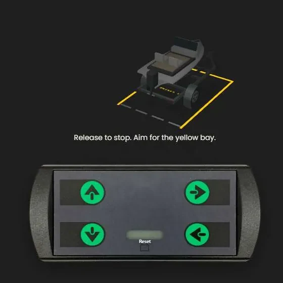
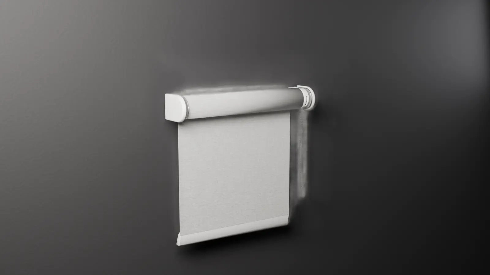

Elegir una cortina en escena
La tela, la luz y la apertura se prueban dentro del ambiente antes de cotizar.
Explorar el despieceEstudio independiente de diseño y tecnología
Webs interactivas, sistemas con IA y contenido para hacer visible lo que tu negocio sabe hacer.
Ver trabajosExplorá cómo cambia una experiencia cuando podés probarla vos mismo.

La tela, la luz y la apertura se prueban dentro del ambiente antes de cotizar.
Explorar el despiece
Una web que conecta el mensaje, la propuesta de adquisición y el siguiente paso del visitante.
Visitar el sitio
Un prototipo de producto que convierte una explicación de maniobra en una acción que se puede practicar.
Hablemos de tu productoSepará los componentes de una cortina roller para entender cómo encajan.

Landings, tiendas y demostraciones interactivas que ayudan a entender, elegir o probar un producto.
Automatizaciones, asistentes internos e integraciones que quitan tareas repetitivas del medio.
Dirección visual, campañas, piezas de marca y videos que explican sin perder la atención.